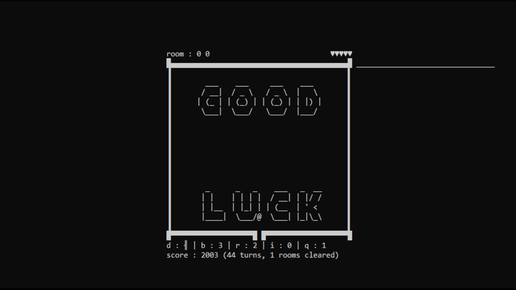

agaricus obscura is a text-only terminal game i created for an assinment for one of my first year modules at Staffordshire University.
the game's intro sequencethe game is heavily inspired by the dungeons from the original Legend of Zelda game from 1986. mechanically the game is very simple. you move around the room, destroy fungi tiles with your sword or bombs, until you've cleared the room.
fungi tiles grow continuously for every turn you take, so you have to be strategic. touching a fungi tile costs you health. bombs, health pickups, max health/range upgrades, and barriers (which can be placed to block the growth of fungi).
rooms are semi-procedural and you can explore the labyrinth in any direction.
 i got pretty good at the game during testingthe game is written in C++, and is only properly compatible with Windows due to various terminal-formatting nuances.
the actual requirement was to develop a text-based game, though there was no requirement for it to actually be purely a 'text adventure' type game, hence my more graphical approach.
i developed a multi-layered screen buffering system to enable the various elements of powerups, walls, players, and fungi to coexist, as well as a system for rendering that information into the terminal as UTF-8 Unicode characters.
you can download the project source from the Github link above, or just the executable to run on Windows and play for yourself. contact me with your highscore and i'll start a leaderboard or something.